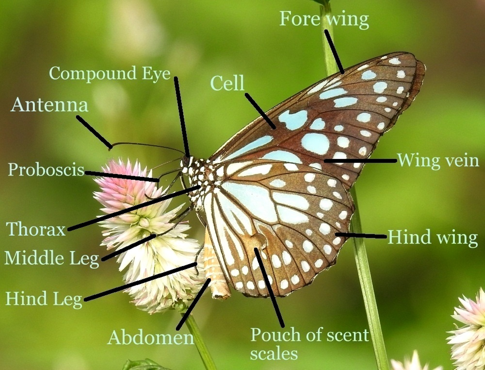

Morphology

Here are the meanings of the terminology used to describe various body parts of a butterfly.
Head
Anterior portion of the butterfly’s body containing the sensory organs and the brain.
Thorax
Portion of the butterfly’s body divided into three segments; it contains the motor appendages, such as the legs and wings.
Wing vein
Protruding line that gives the wing its rigidity and enables the blood to circulate.
Cell
Constituent element of a butterfly’s wing contained between the wing veins.
Antenna
Sensory organ made up of several segments and having mainly olfactory functions (sense of smell) and also helps in balance.
Compound
Organ of vision made up of thousands of facets that perceive shapes, colours, motion and distance.
Proboscis
Mouthlike part allowing the butterfly to feed through aspiration; the proboscis folds back onto itself to avoid interfering with flight.
Fore leg
Articulated member attached to the first segment of the thorax and having powerful sensory organs.
Middle leg
Large articulated member attached to the central segment of the thorax and having powerful sensory organs.
Hind leg
Large articulated member attached to the terminal segment of the thorax and having powerful sensory organs.
Fig:Butterfly upperside morphology illustration (Blue Tiger Male)
Abdomen
Posterior portion of the butterfly’s body made up of 10 segments and containing the major vital organs, such as the heart, the intestines and the genital organs.
Hind wing
Appendage of flight attached to the terminal segment of the thorax.
Forewing
Appendage of flight attached to the central segment of the thorax.
Parts of wings
Here is an illustration showing parts of butterfly wings.
Difference between moths and butterflies
Moths are stout and fuzzy, whereas butterflies are slender and smooth. Butterflies are diurnal (active during the day) whereas moths are nocturnal. There are some exceptions to this, as some butterflies are crepuscular and some moths are diurnal. Butterfly antennae are thin with club-shaped tips, compared with the mostly feathery or comb-like antennae of moths. While at rest, butterflies usually fold their wings back over the bodies, while mothsflatten their wings against their bodies or spread them out in a "jet plane" position.
Butterflies form pupa which are hard smooth and silkless. Moths make cocoons that are wrapped in silk coverings.